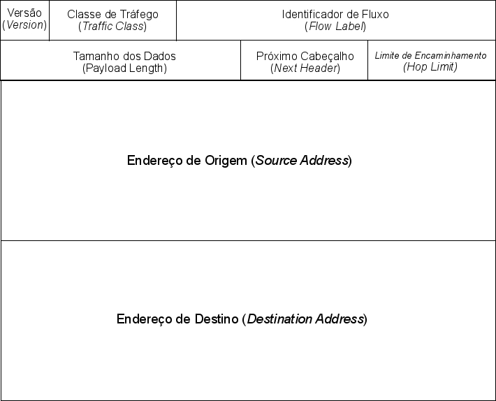
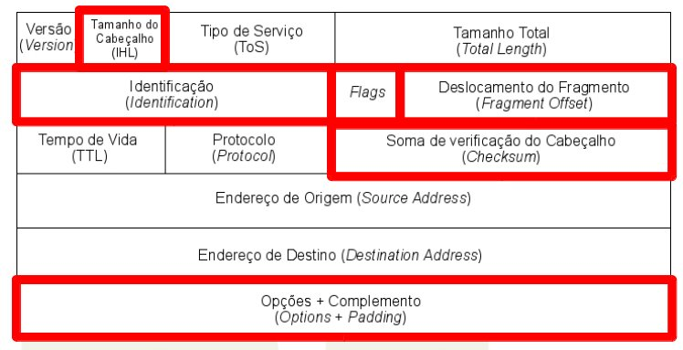
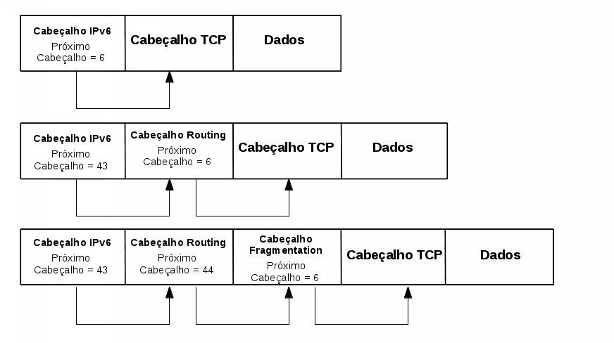
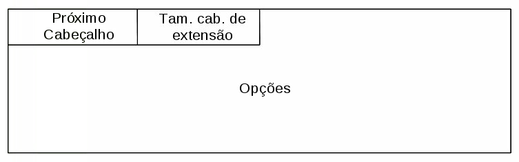
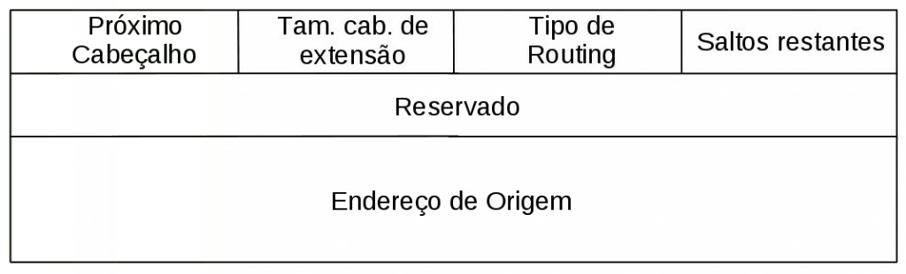
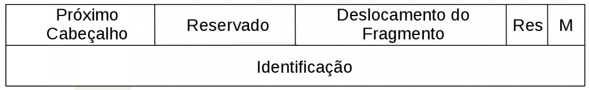

Cabeçalho IPv6

o tamanho do cabeçalho base do IPv6 foi fixado de 40 Bytes.
mais flexível e eficiente com a adição de cabeçalhos de extensão
Dentre essas mudanças, destaca-se a remoção de seis dos campos existentes cabeçalho IPv4, como resultado tanto da inutilização de suas funções quanto de sua reimplentação com o uso de cabeçalhos de extensão. A figura a seguir identifica esses campos.

Outra alteração realizada com o intuito de agilizar o processamento foi a renomeação e reposicionamento de quatro campos conforme a tabela abaixo:
| IPv4 | IPv6 |
| Tipo de Serviço | Classe de Serviço |
| Tamanho Total | Tamanho dos Dados |
| Tempo de Vida (TTL) | Limite de encaminhamento |
| Protocolo | Próximo Cabeçalho |
Além disso, o campo “Identificador de Fluxo” foi adicionado para possibilitar o funcionamento de um mecanismo extra de suporte a QoS (Quality of Service).
2.1. Campos do Cabeçalho IPv6
O cabeçalho do IPv6 está dividido nos seguintes campos:
- Versão (4 bits) - O valor desse campo é 6.
- Classe de Tráfego (8 bits) – Identifica os pacotes por classes de serviços ou prioridade. Ele provê as mesmas funcionalidades e definições do campo “Tipo de Serviço do IPv4″.
- Identificador de Fluxo (20 bits) – Idealmente esse campo é configurado pelo endereço de destino para separar os fluxos de cada uma das aplicações.
- Tamanho do Dados (16 bits) – Indica o tamanho, em Bytes, apenas dos dados enviados junto ao cabeçalho IPv6. O tamnho dos cabeçalhos de extensão também são somado nesse novo campo.
- Próximo Cabeçalho (8 bits) – Identifica o cabeçalho que segue o atual.
- Limite de Encaminhamento (8 bits) – Esse campo é decrementado a cada salto de roteamento e indica o número máximo de roteadores pelos quais o pacote pode passar antes de ser descartado.
- Endereço de origem (128 bits) – Indica o endereço de origem do pacote.
- Endereço de Destino (128 bits) – Indica o endereço de destino do pacote.
Cabeçalhos de extensão
não possuem quantidade ou tamanho fixo, podem existir múltiplos cabeçalhos de extensão no mesmo pacote. A figura abaixo exemplifica essa situação.

As especificações do IPv6 definem seis cabeçalhos de extensão: Hop-by-Hop Options (00), Destination Options (60), Routing (43), Fragmentation (44), Authentication Header (51) e Encapsulating Security Payload (52).
O esquema abaixo mostra o template de um cabeçalho de extensão.

Hop-by-Hop
Identificado pelo valor 00 no campo Próximo Cabeçalho, o cabeçalho de extensão Hop-by-Hop deve ser colocado imediatamente após o cabeçalho base IPv6.
Os seguintes campos estão presentes nesse cabeçalho:
- Próximo Cabeçalho (1 Byte): Identifica o tipo de cabeçalho que segue ao Hop-by-Hop.
- Tamanho do Cabeçalho (1 Byte): Indica o tamanho seu tamanho (em unidades de 8 Bytes) excluídos o oito primeiros bits.
- Opções: Contem uma ou mais opções e seu tamanho é variável. Neste campo, o primeiro Byte contém informações sobre como estas opções devem ser tratadas caso o nó que as esteja processando, não as reconheça. Desse byte, o valor dos primeiros dois bits especifica qual das seguintes ações a devem ser tomadas:
- 00: ignorar e continuar o processamento.
- 01: descartar o pacote.
- 10: descartar o pacote e enviar uma mensagem ICMP Parameter Problem para o endereço de origem do pacote.
- 11: descartar o pacote e enviar uma mensagem ICMP Parameter Problem para o endereço de origem do pacote, apenas se o destino não for um endereço de multicast.
O terceiro bit indica se a informação opcional pode mudar de rota (valor 1) ou não (valor 0).
Até o momento existem dois tipos definidos para o cabeçalho Hop-by-Hop: Router Alert e Jumbogram:
- Router Alert: Utilizado para informar aos nós intermediários que a mensagem a ser encaminhada exige tratamento especial. Está opção é utilizada pelos protocols MLD (Multicast Listener Discovery) e RSVP (Resource Reservation Protocol).
- Jumbogram: Utilizado para informa que o tamanho do pacote IPv6 é maior do que 64KB.
Mais informações
RFC 2711 – IPv6 Router Alert Option
Destination Options
Identificado pelo valor 60 no campo Próximo Cabeçalho, o cabeçalho de extensão Destination Options deve ser processado apenas pelo nó de destino do pacote. A definição de seus campos é igual as do cabeçalho Hop-by-Hop.
Ele é utilizado no suporte ao mecanismo de mobilidade do IPv6 através da opção Home Address, que contém o Endereço de Origem do Nó Móvel quando este está em transito.
Routing

Identificado pelo valor 43 no campo Próximo Cabeçalho, o cabeçalho de extensão Routing foi desenvolvido inicialmente para listar um ou mais nós intermediários que deveriam ser visitados até o pacote chegar ao destino, de forma semelhante às opções Loose Source e Record Route do IPv4. No entanto, esta função tornou-se obsoleta pela RFC5095 devido a problemas de segurança.
Um novo cabeçalho Routing, Type 2, foi definido para ser utilizado como parte do mecanismo de suporte a mobilidade do IPv6. Segundo essa nova definição, ele deve carregar o Endereço de Origem do Nó Móvel em pacotes enviados pelo Nó Correspondente.
As definições de cada campo desse cabeçalho são as seguintes:
- Próximo Cabeçalho (1 Byte): Identifica o tipo de cabeçalho que segue ao cabeçalho Routing.
- Tamanho do Cabeçalho (1 Byte): Indica o tamanho seu tamanho (em unidades de 8 Bytes) excluídos o oito primeiros bits.
- Routing Type (1 Byte): Identifica o tipo de cabeçalho Routing. Atualmente apenas o Type 2 está especificado.
- Saltos restantes: Definido para ser utilizado com o Routing Type 0, indica o número de saltos a serem visitados antes do pacote atingir seu destino final.
- Endereço de Origem: Carrega o Endereço de Origem de um Nó Móvel.
Mais informações
RFC 3775 – Mobility Support in IPv6 – 6.4. Type 2 Routing Header
RFC 5095 – Deprecation of Type 0 Routing Headers in IPv6
Fragmentation

Identificado pelo valor 44 no campo Próximo Cabeçalho, o cabeçalho de extensão Fragmentation é utilizado quando o pacote IPv6 a ser enviado é maior que o Path MTU.
As definições de cada campo do cabeçalho são as seguintes:
- Próximo Cabeçalho (1 Byte): Identifica o tipo de cabeçalho que segue ao cabeçalho Fragmentation.
- Deslocamento do Fragmento (13 bits): Indica, em unidades de oito Bytes, a posição dos dados transportados pelo fragmento atual em relação ao início do pacote original.
- Flag M (1 bit): Se marcado com o valor 1, indica que há mais fragmentos. Se marcado com o valor 0, indica que é o fragmento final.
- Identificação (4 Bytes): Valor único gerado pelo nó de origem, para identificar o pacote original. É utilizado para detectar os fragmentos de um mesmo pacote.
O processo de fragmentação é definido na seção de Funcionalidades Básicas.
Authentication Header e Encapsulating Security Payload
Os cabeçalhos de extensão Authentication Header (AH) e Encapsulating Security Payload (ESP), indicados respectivamente pelos valores 51 e 52 no campo Próximo Cabeçalho, fazem parte do cabeçalho IPSec.
Embora as funcionalidades do IPSec sejam idênticas tanto no IPv4 quanto no IPv6, sua utilização com IPv6 é facilitada pelo fato de seus principais elementos integrarem essa nova versão do protocolo. Outros aspectos que também facilitam sua utilização são a inexistência de NAT IPv6 e o detalhamento dos cabeçalhos AH e ESP.
Aspectos dos cabeçalhos de extensão
Alguns aspectos sobre os cabeçalhos de extensão devem ser observados. Primeiramente, estes cabeçalhos devem ser enviados segundo uma determinada ordem com o intuito de evitar que os nós intermediários tenham que processar toda a cadeia de cabeçalhos para decidir quais eles deverão tratar. Assim, os cabeçalhos importantes para todos os nós envolvidos no roteamento devem ser colocados em antes daqueles que são relevantes apenas para o destinatário final. A vantagem, é que um nó pode parar de analisar cabeçalhos assim que encontrar algum dedicado ao destino. Isso, melhora significativamente o desempenho dos roteadores pacotes, porque, em geral, apenas o processamento do cabeçalho base é necessário. Deste modo, a sequência a ser seguida é:
- Hop-by-Hop Options
- Routing
- Fragmentation
- Authentication Header
- Encapsulating Security Payload
- Destination Options
Vale também observar que, se um pacote for enviado para um endereço multicast, os cabeçalhos de extensão serão examinados por todos os nós do grupo.
Em relação à flexibilidade oferecida pelos cabeçalhos de extensão, merece destaque o desenvolvimento do cabeçalho Mobility, que é utilizado por nós com suporte ao mecanismo de mobilidade IPv6.